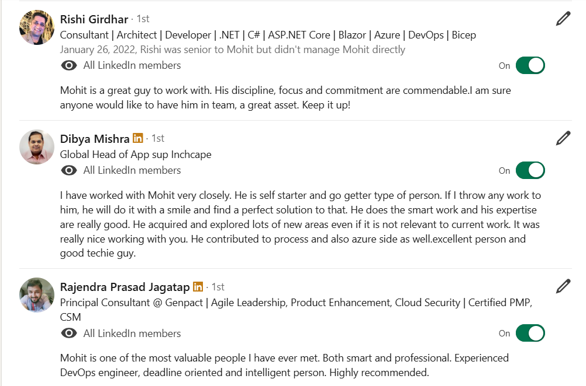
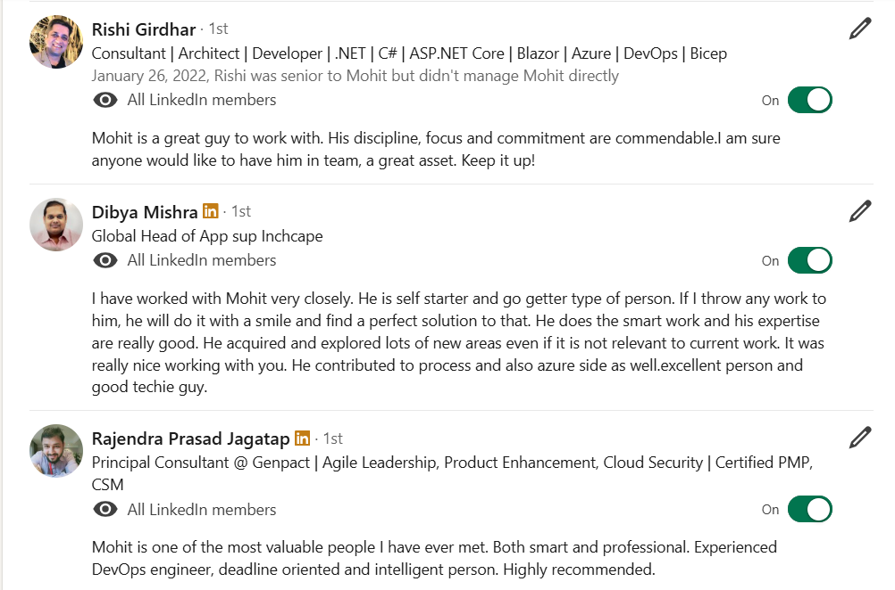

Technical Lead – DevOps & Cloud
Tech Mahindra Ltd. | 06/2022 – Present | Nagpur, MH
- Designed, implemented, and managed CI/CD pipelines utilizing GitHub Actions, Azure DevOps for Microsoft Azure & AWS Infrastructure.
- Experience in creating Docker images and containers and pushing the images into ACR & EKC Registries.
- Implemented deployment strategies for multiple applications, including Rolling Updates and Canary deployments in Elastic Kubernetes Service (EKS).
- Automated repetitive tasks using IaC principles with tools like Terraform and Helm charts.
- Utilized Python & Shell scripting for automation of ad hoc and maintenance tasks.
 
